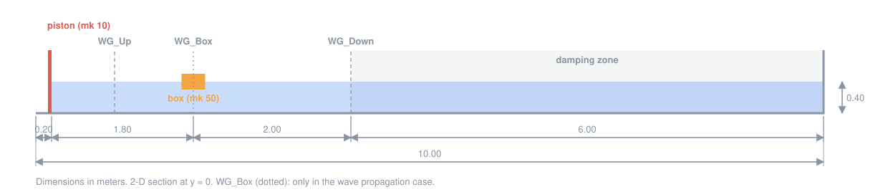
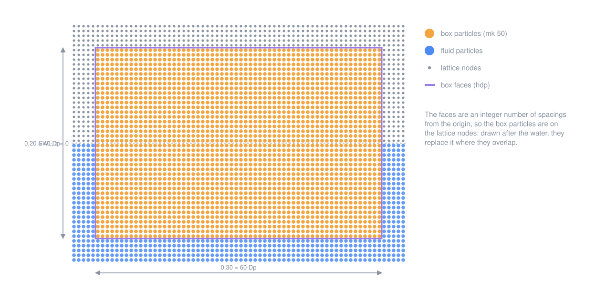
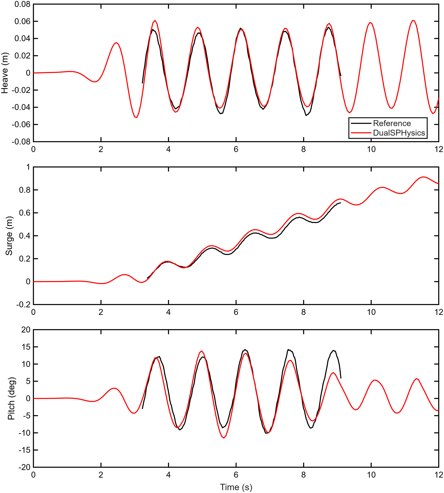

Drifting box¶
Under review by Bonaventura Tagliafierro
This benchmark is a 2-D wave flume with a freely floating box. A piston wavemaker generates regular waves, which make the half-immersed box sway, heave, and roll, and drift slowly in the direction of the waves. The wave elevation and the motions of the box are compared with the experiments of Ren et al. (2015).
The benchmark has two cases, with the same flume and the same waves:
- Wave propagation: the empty flume, to check the waves that reach the position of the box.
- Drifting box: the same flume with the box.
The case files are supplied in examples/benchmarks/06_DriftingBox. This page explains the drifting box case in detail, and in particular how the box is made of particles; the wave propagation case is described by its differences from it.
What's Covered in This Tutorial
- Checking the incident waves in an empty flume before adding a body
- A floating box on the particle lattice, with its mass from a relative weight
- Second-order regular waves from a piston, and a damping zone
- The motions of the box with FloatingInfo
Video: To be updated.
Case configuration¶
Physical setup¶

| Element | Dimensions [m] | Position |
|---|---|---|
| Flume | 10.00 long, walls 0.80 high | floor at \(z=-0.40\), still-water level at \(z=0\) |
| Waves | height 0.10, period 1.20 s | regular, second order; wavelength \(L\) = 1.94 m |
| Piston | mk 10 | face at \(x=0.20\) |
| Box | 0.30 × 0.20, density 500 kg/m³ | centered at \(x=2.00\), \(z=0\): half immersed |
| Damping zone | 6.00 | from \(x=4.00\) to the end wall |
| Particle spacing | \(Dp = 0.005\) |
The case is 2-D: particles are created only in the plane \(y=0\). The water is labeled mkfluid=0, the flume mkbound=0, the piston mkbound=10, and the box mkbound=50. The case also runs with the smaller waves of the paper, 0.04 m high, by changing waveH.
Physical constants¶
<constantsdef>
<gravity x="0" y="0" z="-9.81" comment="Gravitational acceleration" units_comment="m/s^2" />
<rhop0 value="1000" comment="Reference density of the fluid (Ren et al.: 1000)" units_comment="kg/m^3" />
<rhopgradient value="3" comment="Initial density gradient 1:Rhop0, 2:Water column, 3:Max. water height (default=2)" />
<hswl value="0" auto="true" comment="Maximum still water level to calculate speedofsound using coefsound" units_comment="metres (m)" />
<gamma value="7" comment="Polytropic constant for water used in the state equation" />
<speedsystem value="0" auto="true" comment="Maximum system speed (by default the dam-break propagation is used)" />
<coefsound value="20" comment="Coefficient to multiply speedsystem" />
<speedsound value="60" auto="true" comment="Speed of sound to use in the simulation (by default speedofsound=coefsound*speedsystem)" />
<coefh value="1.3" comment="Coefficient to calculate the smoothing length (h=coefh*sqrt(2*dp^2) in 2D)" />
<cflnumber value="0.2" comment="Coefficient to multiply dt" />
</constantsdef>
Fluid: water with reference density 1000 kg/m³, as in the paper. rhopgradient=3 indicates that the water is initialized with a hydrostatic density profile computed from the maximum water height.
Speed of sound: the entries with auto="true" are calculated by GenCase. The still-water level hswl is taken from the water depth, and the system speed is the dam-break velocity taken as \(\sqrt{g\,h_{\mathrm{swl}}}\); the speed of sound is then computed considering the multiplier coefsound = 20.
Smoothing length: in 2D, \(h = \mathrm{coefh}\,\sqrt{2}\,Dp = 1.3\sqrt{2}\times0.005 = 0.0092\) m. Each particle interacts with neighbors up to \(2h\) = 3.68·Dp away. This information is used to define the number of boundary layers needed for correct simulations.
Time step: cflnumber=0.2 scales the time step that the solver computes at every step, to account for the Courant condition.
Geometry definition¶
Real dimensions and the particle lattice¶
<newvarcte depth="0.40" _rem="Water depth (SWL at z=0)" />
<newvarcte waveH="0.10" _rem="Wave height: 0.04 or 0.10" />
<newvarcte wavePeriod="1.20" _rem="Wave period" />
<newvarcte timeMax="10*wavePeriod" />
<newvarcte timeOut="wavePeriod/20" />
<newvarcte DefTankpx="0" DefTanksx="10.0" _rem="Tank length (Fig. 9)" />
<newvarcte DefTankpz="-depth" DefTanksz="2*depth" _rem="Wall height (2*depth, as Fig. 3)" />
<newvarcte DefPistonX="0.20" _rem="Piston face at rest (paper: x=0.2 m)" />
<newvarcte DampingX1="4.0" DampingX2="DefTankpx+DefTanksx" _rem="Sponge layer, last 3 m (Fig. 9)" />
<newvarcte BoxX="2.0" _rem="Box centroid x (section 5)" />
<newvarcte BoxZ="0" _rem="Box centroid z (half immersed)" />
<newvarcte DefBoxsx="0.30" DefBoxsz="0.20" />
<newvarcte DefBoxpx="BoxX-DefBoxsx/2" DefBoxpz="BoxZ-DefBoxsz/2" />
<newvarcte BoxRelW="0.50" _rem="Average density 500 kg/m^3" />
<!-- Resolution -->
<newvarcte Dp="0.005" />
<newvarcte Dpm="Dp/2" />
<!-- Domain limits -->
<newvarcte PminX="DefTankpx-Dpm-10*Dp" PminY="0" PminZ="DefTankpz-Dpm-10*Dp" />
<newvarcte PosMin_x="PminX" PosMin_y="PminY" PosMin_z="PminZ" />
Real dimensions: the Def* constants are the real geometry: the flume, the piston face, and the box, defined by its center and its size. None of them depends on Dp.
The lattice: PminX and PminZ are Dp/2 plus ten spacings outside the end of the flume and the floor, so the nodes are at Dp/2 + k·Dp from \(x=0\) and from the floor. The walls, the piston face, and the box faces are all at multiples of 0.005 m from these surfaces, so they all fall halfway between two nodes. The first boundary layers are placed with roundposx and roundposz, as in the Dambreak 3D benchmark.
The floating box¶
Its faces and particles¶
<newvarcte Boxpx1="DefBoxpx+Dpm" Boxpx2="roundpos(DefBoxpx+DefBoxsx-Dpm,Boxpx1,Dp)" />
<newvarcte Boxpz1="DefBoxpz+Dpm" Boxpz2="roundpos(DefBoxpz+DefBoxsz-Dpm,Boxpz1,Dp)" />
First layer: Boxpx1 and Boxpz1 are the first layer of particles, Dp/2 inside the left face and the bottom; Boxpx2 and Boxpz2, Dp/2 inside the right face and the top, are rounded to an integer number of spacings from the first layer. The box is 0.30 m = 60·Dp long and 0.20 m = 40·Dp high, so all four faces are exact.
<!-- Box mk=50 -->
<setmkbound mk="50" />
<setfrdrawmode auto="true" />
<drawbox>
<boxfill>solid</boxfill>
<point x="#Boxpx1" y="#Tankpy1" z="#Boxpz1" />
<endpoint x="#Boxpx2" y="#Tankpy2" z="#Boxpz2" />
<layers vdp="0,-1,-2,-3,-4" />
</drawbox>
<setfrdrawmode auto="false" />
<shapeout file="box" reset="true" />
A solid box on the lattice: boxfill solid fills the box with 60 × 40 boundary particles. The first layer is at Dp/2 from the faces, which are halfway between nodes, so the box particles are on the lattice nodes, and FreeDraw places them exactly where the lattice would.
Drawn after the water: the box is drawn last, after the water fills the flume up to \(z=0\). Its particles take the nodes of the water below the still-water level, since the last drawing wins, so no water is left inside the box (Figure 2).
The wall surface: in GeometryForNormals, the same box is drawn through its first layer, with its four faces (left|right|bottom|top), and layers vdp="0.5" moves them half a spacing outwards, onto the real faces.

Its mass¶
Relative weight: relativeweight="0.5" gives the box half the density of the water, 500 kg/m³: GenCase computes its mass from the volume of its particles, and its center of gravity and inertia from their positions, as a uniform body. With half the density of the water, the box floats with half its height immersed, which is where it starts.
Final marker: GenCase stores the box particles with mk = 50 + 1 + 9 = 60 (see Particle types and the mk number).
Flume, piston, and water¶
The flume and the piston follow the same approach as the Wave generation benchmark: the floor and the end wall are drawn through their first layer with five layers outwards (0*,1,2,3,4), the piston with six columns behind its face, starting one row above the floor, and the water fills the flume from the piston to the end wall, up to \(z=0\).
Wave generation¶
<piston>
<mkbound value="10" comment="Mk-Bound of selected particles" />
<waveorder value="2" comment="Order wave generation 1:1st order, 2:2nd order (def=1)" />
<depth value="#depth" comment="Fluid depth (def=0)" />
<waveheight value="#waveH" comment="Wave height" />
<waveperiod value="#wavePeriod" comment="Wave period" />
<ramp value="1" comment="Periods of ramp (def=0)" />
<savemotion periods="30" periodsteps="20" xpos="#BoxX-DefPistonX" zpos="#-depth/2" comment="Saves motion data. xpos and zpos are optional. zpos=-depth of the measuring point" />
</piston>
The piston generates second-order regular waves, with a ramp over the first period. savemotion writes the theoretical elevation at xpos from the piston, the position of the box. See the Wave generation benchmark for the details of each option. A damping zone from \(x\) = 4.00 m to the end wall (redumax=6) absorbs the waves.
Numerical gauges¶
Two runtime gauges, 1.0 m before and 2.0 m after the box, record the water level:
| Gauge | \(x\) [m] | Position |
|---|---|---|
| WG_Up | 1.00 | between the piston and the box |
| WG_Down | 4.00 | after the box, at the start of the damping zone |
Each is a vertical line from \(z=-0.40\) to \(0.40\) m (±4 wave heights), with check points 0.05·Dp apart, written every 0.01 s.
Wave propagation case¶
WavePropagation_Def.xml is the same case without the box: the same flume, piston, waves, damping zone, and parameters. It is run first, to check the waves that reach the position of the box, before adding the body. It differs from DriftingBox_Def.xml in two places only:
| Wave propagation | Drifting box | |
|---|---|---|
| Box | not drawn | particles, wall surface, and <floatings> |
| Gauges | WG_Up, WG_Box at \(x=2.00\), WG_Down | WG_Up, WG_Down |
WG_Box: the extra gauge is at the center of the box, where the box would be. Its water level is the incident wave of the drifting box case, and is compared with the theoretical elevation of savemotion, written for the same position, and with the experiment.
Numerical parameters¶
Boundaries: mDBC with free slip (FS) on the flume, the piston, and the box.
Floating body: RigidAlgorithm=SPH computes the motion of the box from the forces of the fluid, and FtPause=0 lets it move from the start.
Viscosity: laminar viscosity with the kinematic viscosity of water, 10⁻⁶ m²/s.
Density diffusion and shifting: the Fourtakas density diffusion with coefficient 0.10 (Fourtakas et al., 2019), and advanced shifting (4), with the 2-D free-surface threshold 1.5.
Duration and output: the simulation runs for 10 wave periods, 12.0 s, and saves the particles every \(T/20\) = 0.06 s, in double precision.
Domain: default determines the solver domain as the box around all the generated particles, and z="default + 10%" raises its top by 10% of its height.
Running the simulation¶
Input files¶
Work in examples/benchmarks/06_DriftingBox/:
| File | Purpose |
|---|---|
WavePropagation_Def.xml |
Empty flume, read by GenCase |
DriftingBox_Def.xml |
Flume with the box, read by GenCase |
wDriftingBox_win64_GPU.bat |
Windows: GenCase, GPU simulation, and post-processing |
reference/Ren2015_Fig11_Experimental_H0.10.csv |
Experimental elevation and motions, digitized from Figure 11 of the paper |
Windows¶
From the case folder, run wDriftingBox_win64_GPU.bat. GenCase and DualSPHysics are run as in the other benchmarks; for the wave propagation case, change name to WavePropagation. The post-processing writes the fluid particles, the surface of the box, and its motion:
set dirout2=%dirout%\boundary
%boundaryvtk% -loadvtk AutoActual -motiondata %diroutdata% -savevtkdata %dirout2%/Box -onlytype:floating
if not "%ERRORLEVEL%" == "0" goto fail
set dirout2=%dirout%\post
%floatinginfo% -dirin %diroutdata% -savemotion -onlymk:10-120 -savedata %dirout2%/
if not "%ERRORLEVEL%" == "0" goto fail
BoundaryVTK: writes the surface of the box at every output time, to show it in ParaView with the water.
FloatingInfo: writes the motion of the floating bodies with a final marker between 10 and 120, here the box (mk = 60): the position of its center, its rotation, and their velocities.
Results and validation¶
The experimental data of Ren et al. (2015), for the 0.10 m waves, are compared with the elevation at the position of the box from the wave propagation case (Figure 3), and with the sway, heave, and roll of the box from FloatingInfo (Figure 4).


References¶
◆ Ren, B., He, M., Dong, P., & Wen, H. (2015). Nonlinear simulations of wave-induced motions of a freely floating body using WCSPH method. Applied Ocean Research, 50, 1-12. DOI: 10.1016/j.apor.2014.12.003.